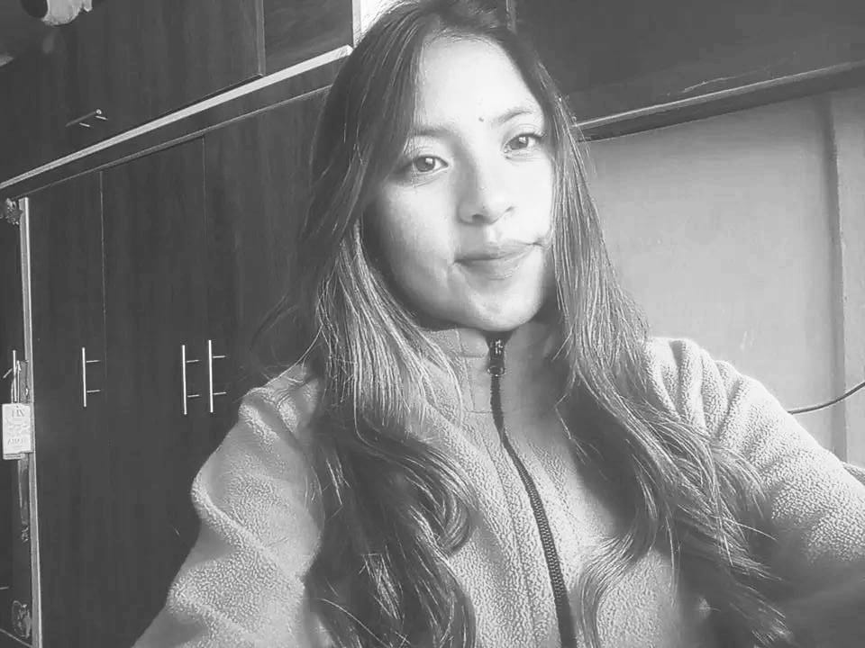

🏠 Inicio

Sandy Elisabeth Toapanta Puco
- Edad: 20 años
- Ciudad: Latacunga
- Provincia: Cotopaxi
- País: Ecuador
- Universidad: Universidad Técnica de Cotopaxi
- Carrera: Ingeniería en Software
🌼 Sobre mí
Soy una estudiante entusiasta de Ingeniería en Software, curiosa por comprender cómo funcionan las máquinas por dentro y cómo el pensamiento lógico se transforma en programas útiles. Disfruto aprender paso a paso, con paciencia y constancia, y creo firmemente que cada error es una oportunidad para crecer.
🎯 Objetivos académicos
🌱 Habilidades
💗 Valores personales
📘 Unidad 1 · Fundamentos del Hardware y la Lógica
Selecciona un tema para explorarlo en detalle.
📗 Unidad 2 · Algoritmos
Selecciona un tema para explorarlo en detalle.
📕 Unidad 3 · Programación en Python
Selecciona un tema para explorarlo en detalle.
🎮 Juegos Interactivos
Pon a prueba lo aprendido con estas actividades.
❓ Cuestionario general
🔤 Sopa de letras
Arrastra el mouse (o el dedo) sobre las letras para formar las palabras. Palabras encontradas: 0/0
✅ Verdadero o Falso
🧠 Memoria de conceptos
Encuentra cada concepto con su definición. Intentos: 0 · Pares encontrados: 0/8
ℹ Acerca del proyecto
🎯 Objetivo del proyecto
Organizar y presentar de forma visual, ordenada e interactiva los contenidos de la asignatura de Fundamentos de Programación, facilitando el estudio y repaso de los temas de las tres unidades.
🌷 Finalidad
Convertir el estudio en una experiencia más agradable y dinámica, combinando teoría, ejemplos, ejercicios y juegos educativos en un solo espacio digital.
🎓 Información académica
- Estudiante: Sandy Elisabeth Toapanta Puco
- Universidad: Universidad Técnica de Cotopaxi
- Carrera: Ingeniería en Software
- Año: 2026
💐 Agradecimientos
A mis docentes, por guiarme en este camino de aprendizaje, y a mi familia, por su apoyo constante para seguir creciendo como profesional.